A Yok Story
Short picture books
A ten-book collection for ages 3–6, with one gentle emotional skill in each story.
Three gentle collections for growing hearts
Discover Yok’s short picture-book adventures, a new English-French Bilingual Yok collection, and Luma’s richly illustrated Blue Dreams Forest anthologies.
A Yok Story supports ages 3–6 with one child-sized emotional skill per book. A Bilingual Yok Story brings new Yok adventures in English and French for ages 3–6. Blue Dreams Forest offers five gentle read-aloud stories per volume for ages 4–8.
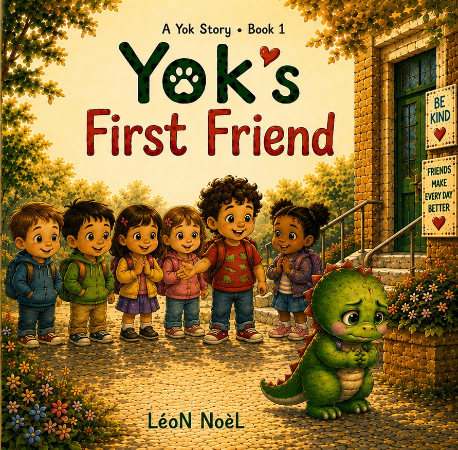

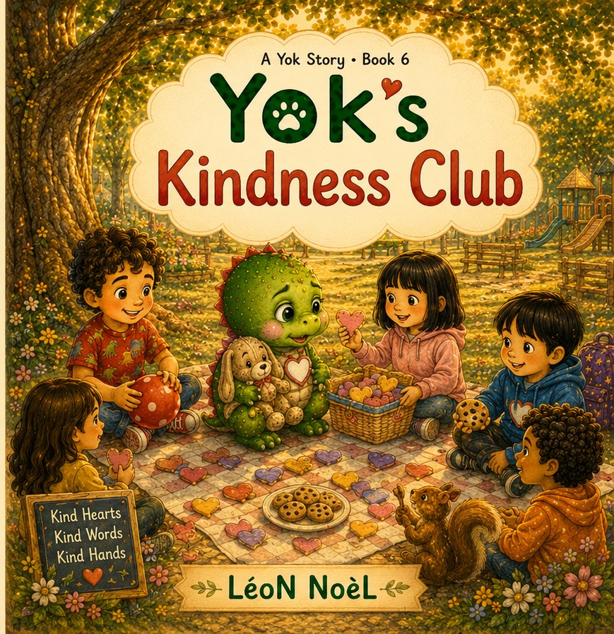
Choose a collection
All three collections share a warm, emotionally supportive voice, while offering different formats, languages, and reading occasions.
A Yok Story
A ten-book collection for ages 3–6, with one gentle emotional skill in each story.
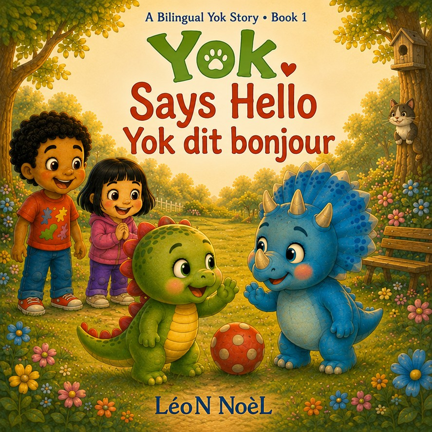
A Bilingual Yok Story
Six new bilingual adventures for ages 3–6, pairing social-emotional stories with gentle exposure to both English and French.

Blue Dreams Forest
Six illustrated read-aloud anthologies for ages 4–8, created for bedtime, shared reading, and developing readers.
A Yok Story
Short illustrated stories for ages 3–6 about friendship, school, voice, mistakes, welcome, kindness, honesty, patience, feelings, and trying again.
Book 1 · Friendship & belonging
Yok feels different and shy at the park until Tom offers a patient, gentle invitation to play.
Gentle takeaway: One tiny brave step can begin a friendship.
Published: June 28, 2026

Book 2 · First-day courage
Yok learns that a big new place can feel safer with one small step at a time: backpack, hello, one activity.
Gentle takeaway: Three small steps can make a new place feel smaller.
Published: July 5, 2026
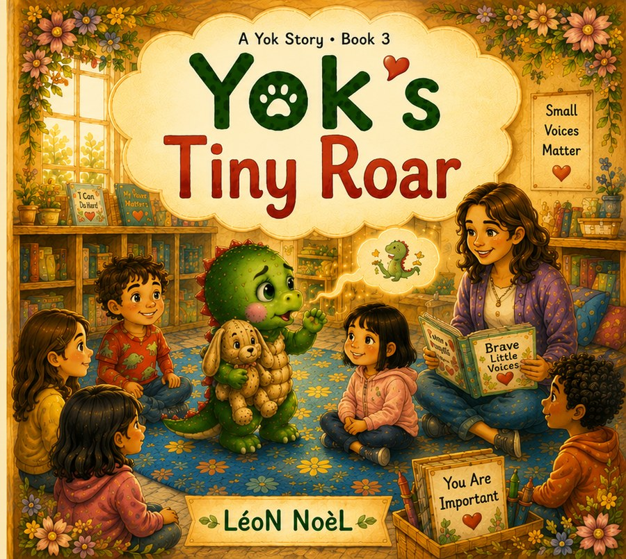
Book 3 · Finding your voice
Yok discovers that a whisper, point, gesture, or one brave word can still matter.
Gentle takeaway: Even a small voice can help someone.
Published: July 12, 2026
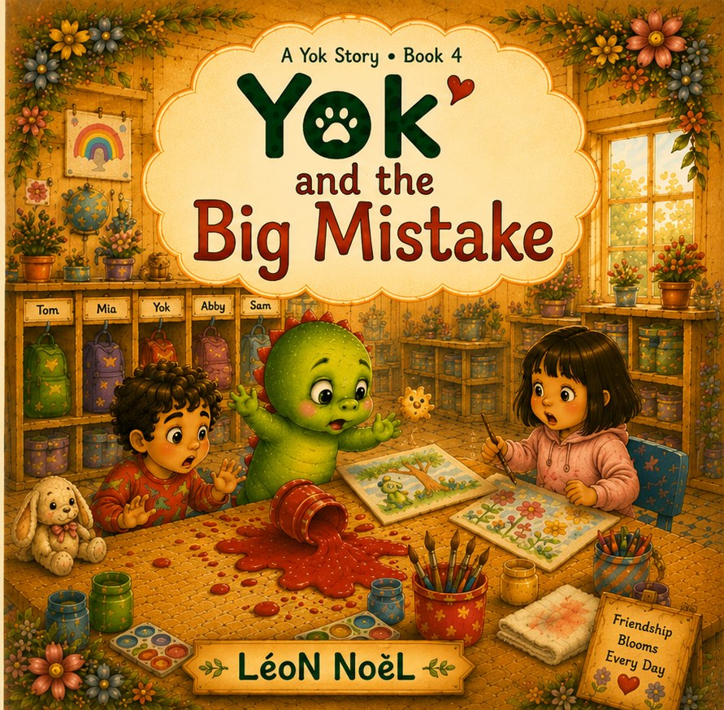
Book 4 · Mistakes & repair
A paint spill feels scary, but Yok learns to tell what happened, say sorry, and help make things new.
Gentle takeaway: A mistake can become a chance to make things better.
Published: July 18, 2026
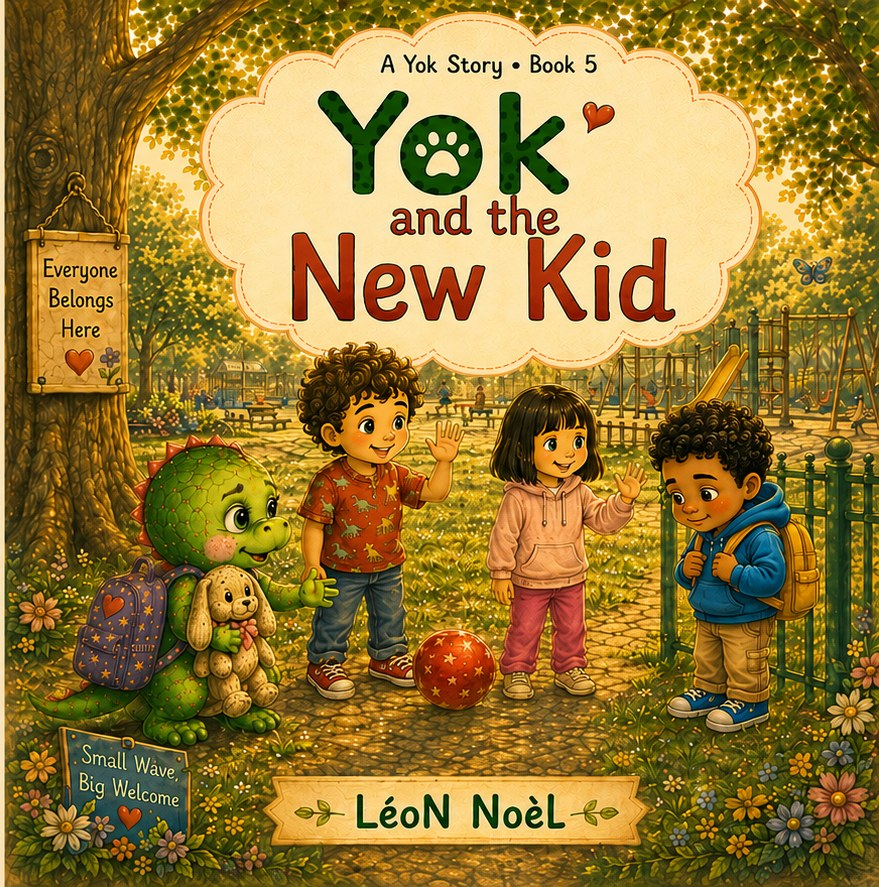
Book 5 · Welcome & inclusion
Yok remembers how it feels to stand apart and learns how one gentle invitation can open the circle.
Gentle takeaway: Welcome can be passed along.
Published: July 25, 2026
Book 6 · Small kindness
Yok learns that kindness does not have to be huge; sharing space, returning something, and sitting beside a friend count.
Gentle takeaway: Small kind actions can fill a big heart.
Published: August 1, 2026
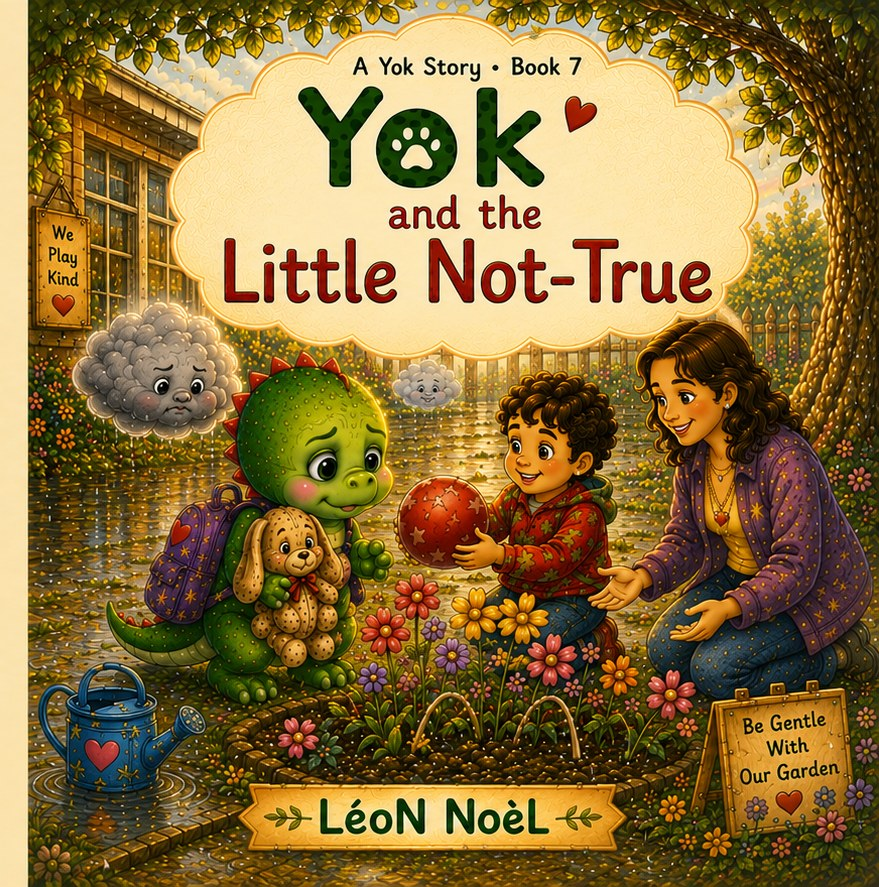
Book 7 · Honesty & repair
Yok learns that telling the truth can feel hard, but true words open the way to repair.
Gentle takeaway: Truth can make a heavy heart feel lighter.
Published: August 8, 2026
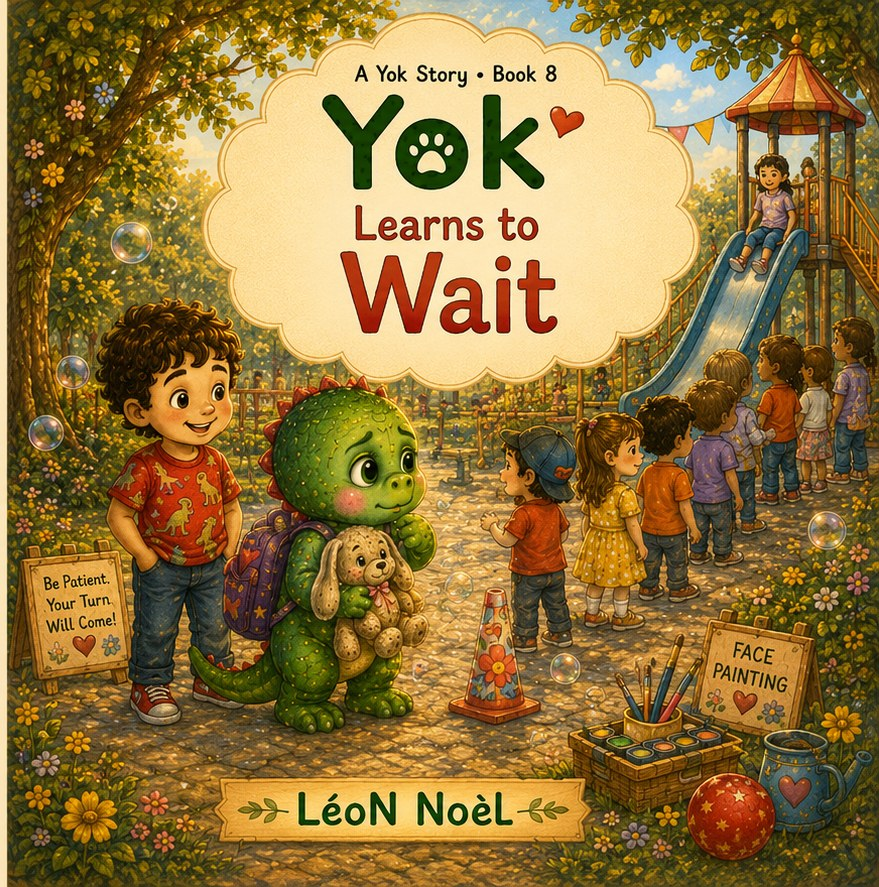
Book 8 · Patience & turn-taking
A long line feels wiggly, so Yok tries concrete waiting tools: breathing, counting, squeezing, and cheering.
Gentle takeaway: Waiting does not make your turn disappear.
Published: August 15, 2026
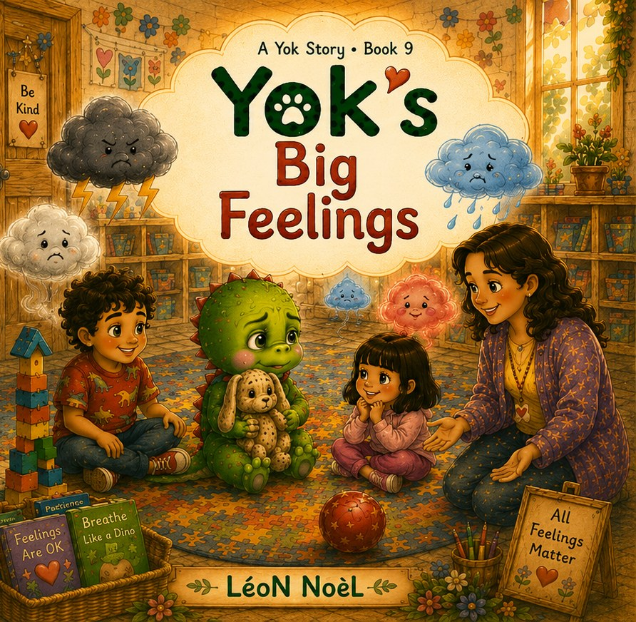
Book 9 · Emotional literacy
Yok learns to notice body feelings, name feelings one at a time, breathe, and ask for what she needs.
Gentle takeaway: Big feelings are like weather inside the body.
Published: August 22, 2026
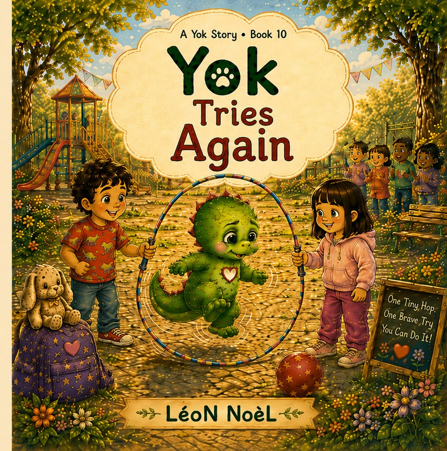
Book 10 · Persistence & “not yet”
Jump rope feels too hard until Yok breaks the task into one tiny piece and tries again when ready.
Gentle takeaway: Not yet is a little door.
Planned publication: August 29, 2026
Free Yok downloads
Each download is free for home, classroom, and library use. Please do not resell the PDFs or upload altered versions.
Bonus quick printables
Use these when you need one fast printable without opening a full kit.
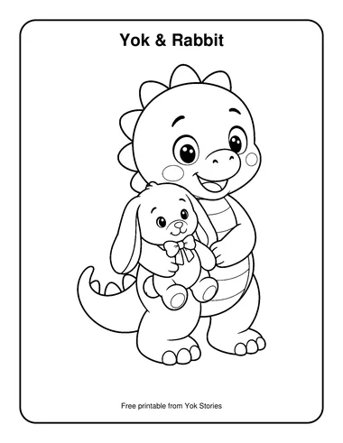
Yok & Rabbit Coloring PageA one-page printable coloring sheet with Yok holding Rabbit.PDF · 33 KB Red Ball Park Coloring PageA one-page park scene printable with the red ball.PDF · 28 KB
Red Ball Park Coloring PageA one-page park scene printable with the red ball.PDF · 28 KB Feelings Weather ChartA printable feelings chart with Foggy, Rainy, Thunder, and Sunny.PDF · 63 KB
Feelings Weather ChartA printable feelings chart with Foggy, Rainy, Thunder, and Sunny.PDF · 63 KB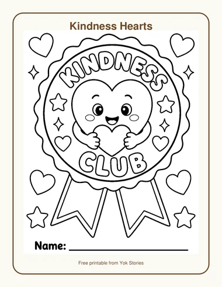
Kindness HeartsA printable kindness club badge with hearts, stars, and a name line.PDF · 46 KBBook 1 · Friendship & belonging
One tiny brave step can begin a friendship.
Read-aloud guide, parent conversation card, friendship invitation cards, Tiny Brave Step certificate, bookmarks, sample coloring page, and Little Try activity.
Book 2 · First-day courage
Three small steps can make a new place feel smaller.
Read-aloud guide, parent card, Three Brave Steps cards, certificate, bookmarks, sample coloring page, and Little Try activity.
Book 3 · Finding your voice
Even a small voice can help someone.
Read-aloud guide, parent card, Tiny Roar practice cards, certificate, bookmarks, sample coloring page, and Little Try activity.
Book 4 · Mistakes & repair
A mistake can become a chance to make things better.
Read-aloud guide, parent card, Fix-It Steps cards, repair certificate, bookmarks, sample coloring page, and Little Try activity.
Book 5 · Welcome & inclusion
Welcome can be passed along.
Read-aloud guide, parent card, Welcome Steps cards, certificate, bookmarks, sample coloring page, and Little Try activity.
Book 6 · Small kindness
Small kind actions can fill a big heart.
Read-aloud guide, parent card, Kindness Steps cards, certificate, bookmarks, sample coloring page, and Little Try activity.
Book 7 · Honesty & repair
Truth can make a heavy heart feel lighter.
Read-aloud guide, parent card, Truth Steps cards, Truth and Repair certificate, bookmarks, sample coloring page, and Little Try activity.
Book 8 · Patience & turn-taking
Waiting does not make your turn disappear.
Read-aloud guide, parent card, Waiting Tools cards, certificate, bookmarks, sample coloring page, and Little Try activity.
Book 9 · Emotional literacy
Big feelings are like weather inside the body.
Read-aloud guide, parent card, Big Feeling Steps cards, certificate, bookmarks, sample coloring page, and Little Try activity.
Book 10 · Persistence & “not yet”
Not yet is a little door.
Read-aloud guide, parent card, Try-Again Steps cards, Not-Yet Brave Try certificate, bookmarks, sample coloring page, and Little Try activity.
For parents, teachers, and librarians
The resources are designed to be practical, not complicated. Read the book, ask one gentle question, practice one child-sized sentence or action, then let children draw, point, whisper, act, or answer aloud.
Friendship, first-day courage, and welcoming someone new.
Mistakes, honesty, apology, and repair without shame.
Waiting, big feelings, frustration, rest, and trying again.
About the author
LéoN NoèL created Yok Stories for children who need small, concrete language for big early-childhood moments: joining, waiting, repairing, feeling, and trying again. The books are designed to support warm conversations between children and trusted grown-ups.
Every story gives children one usable phrase, one small action, and one emotionally safe way to try.
Free PDFs may be printed for home, classroom, library, and storytime use. They are not for resale.
Publication schedule
Upcoming dates are planned publication dates. Amazon processing may vary by marketplace.
Calendar summary
Every dated release currently on the schedule is marked below.
Key: Y = A Yok Story · B = A Bilingual Yok Story · L = Blue Dreams Forest. The number is the book number.
A Yok Story
Browse the Yok series on Amazon
A Bilingual Yok Story
Six new bilingual Yok stories for ages 3–6.
Blue Dreams Forest
Browse Luma’s series on Amazon